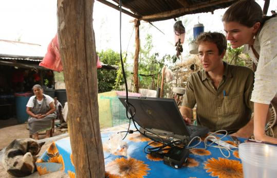
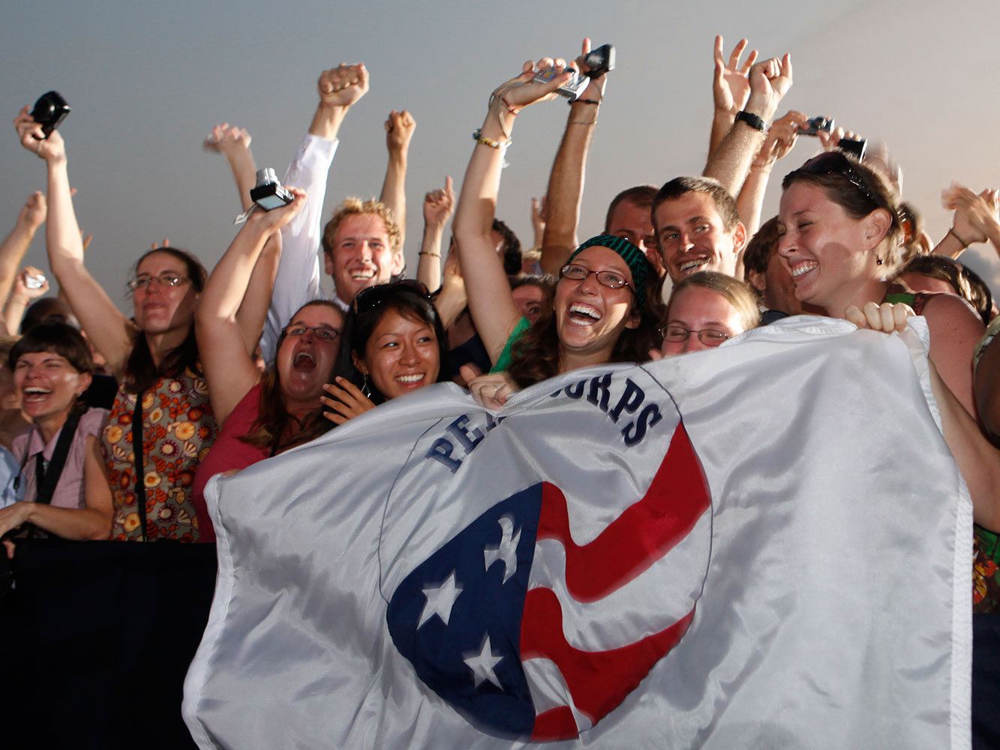

Poor quality community maps in Peace Corps serving countries.

The Complication
For-profit entities have little incentive to build digital maps of communities in the developing world. Most people in these communities lack the internet access to build the map themselves.

The Solution
Mobilize RPCV/PCV Teams to help map Peace Corps communities using the latest easy to use digital mapping tools.
Round 3 Current results (ongoing)
Round 1 Champion: Cameroon
Round 2 Champion: Philippines
What is the Peace Corps Mapdown?
The Peace Corps Mapdown is a fun competition to show pride for your country of service and raise awareness of the latest digital mapping tools.
Mapping is completed in a simple, open source, digital mapping website called OpenStreetMap.
Winners are decided by amount of data input by team members over a two week period.
The two week competition culminates with an editing event at Peace Corps Headquarters on Tuesday, Nov 19th.
Remember this is a competition. Recruit as many RPCVs, PCVs and friends to your team as possible. Anyone can participate.
Participating is easy and anyone can do it.
No experience with mapping needed since the main activity will be tracing satellite imagery. Check out this video to see how easy it has become.
When and where is the competition?
Round Three participants can input data into OpenStreetMap from 11/6/2013 to 8pm EST on 11/19/2013.
The two week competition will culminate with an in-person editing event on Tuesday, November 19th, 2013 at Peace Corps Headquarters, 1111 20th Street NW.
Doors open at 6pm followed by mapping from 6:30pm-8pm.
At 6:15 we will do a quick tutorial for new users.
At 8pm, we will have a fun debrief at a local eatery.
Before 8pm EST on 11/19/2013 team captains must submit a list of your team member OpenStreetMap usernames to innovation@peacecorps.gov.
What data should be added to the map?
The beauty of this effort is in the collaboration. Virtual participants will add non-specific data that requires no local knowledge but is easier to do with fast Internet. Volunteers on the ground will add details to the base layer that virtual participants have created.
For this effort we are focusing on basics like:
Roads/Paths
Water Sources
Major Buildings
You should not add data that is personal in nature, especially data specifying the exact location of a Peace Corps Volunteer.
How do you create a Peace Corps Mapdown Team?
Complete the sign-up form below to be linked with existing participants from your country.
If no team currently exists, you can become a team captain and recruit your own dream team of editors.
Team Captain Responsibilities: recruit as many team members as you can and organize their efforts.
OpenStreetMap is a free, editable map of the whole world. All information added to the map is free for anyone to use.
The main way that users participate in OpenStreetMap is by editing the map. With a free user account, you can make improvements to the map for everyone. Users help out by tracing roads and features via satellite imagery into the map.